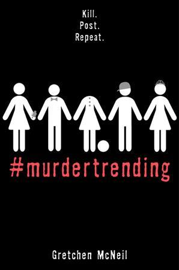
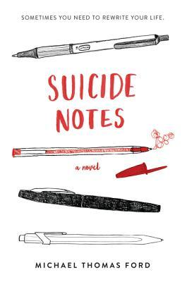

Nina's Top 3 Books
Anxious People

Looking at real estate isn't usually a life-or-death situation, but an apartment open house becomes just that when a failed bank robber bursts in and takes a group of strangers hostage. The captives include a recently retired couple who relentlessly hunt down fixer-uppers to avoid the painful truth that they can't fix their own marriage. There's a wealthy bank director who has been too busy to care about anyone else and a young couple who are about to have their first child but can't seem to agree on anything. Add to the mix an eighty-seven-year-old woman who has lived long enough not to be afraid of someone waving a gun in her face, a flustered but still-ready-to-make-a-deal real estate agent, and a mystery man who has locked himself in the apartment's only bathroom, and you've got the worst group of hostages in the world.
Each of them carries a lifetime of grievances, hurts, secrets, and passions that are ready to boil over. None of them is entirely who they appear to be. And all of them—the bank robber included—desperately crave some sort of rescue. As the authorities and the media surround the premises, these reluctant allies will reveal surprising truths about themselves and set in motion a chain of events so unexpected that even they can hardly explain what happens next.
#Murdertrending
@doctorfusionbebop: Some 17 y.o. chick named Dee Guerrera was just sent to Alcatraz 2.0 for killing her stepsister. So, how long do you think she'll last?
@morrisdavis72195: I hope she meets justice! She'll get what's coming to her! BWAHAHA!
@EltonJohnForevzz: Me? I think Dee's innocent. And I hope she can survive.
Suicide Notes
Fifteen-year-old Jeff wakes up on New Year's Day to find himself in the hospital—specifically, in the psychiatric ward. Despite the bandages on his wrists, he's positive this is all some huge mistake. Jeff is perfectly fine, perfectly normal; not like the other kids in the hospital with him. But over the course of the next forty-five days, Jeff begins to understand why he ended up here—and realizes he has more in common with the other kids than he thought.